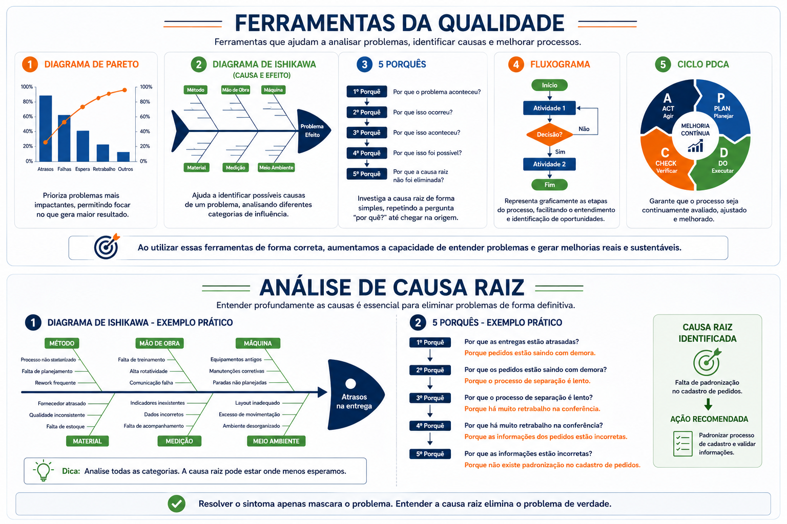
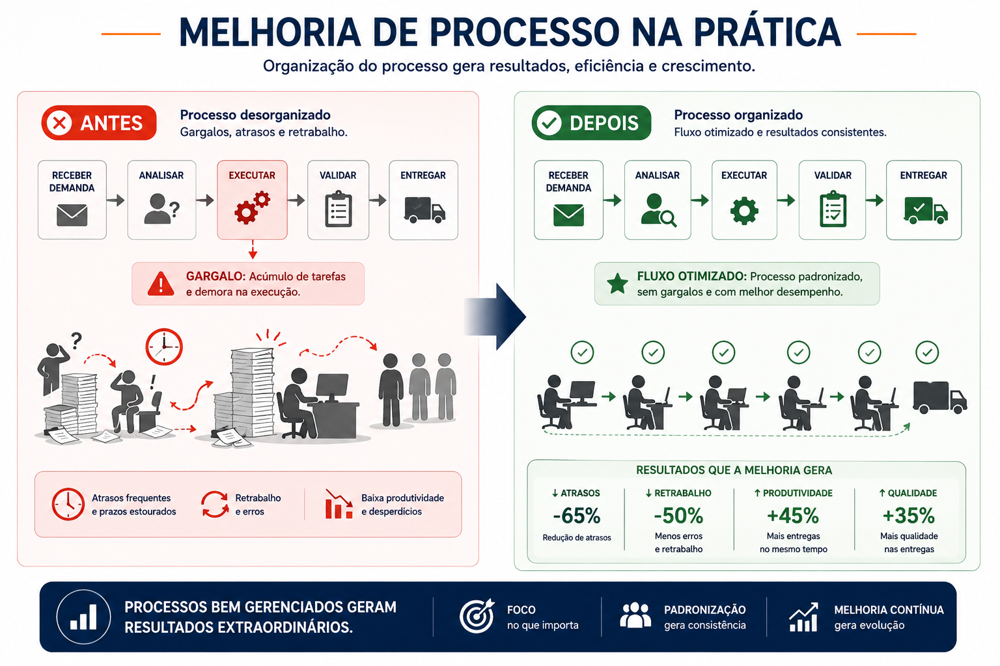

Duração
35 minutos
Nível
Intermediário
Área
Gestão
Parte
2 de 2
Analisar problemas corretamente muda resultados
Muitas operações corrigem sintomas, mas não resolvem as causas reais dos problemas.
A melhoria contínua depende de: análise, medição, investigação e padronização.
Ferramentas da qualidade e análise
Ferramentas da qualidade ajudam equipes a identificar padrões, entender falhas e encontrar oportunidades de melhoria.
Pareto
Mostra quais problemas geram maior impacto.
Ishikawa
Organiza possíveis causas de um problema.
5 Porquês
Técnica utilizada para aprofundar investigação.
Fluxograma
Representa visualmente o fluxo operacional.
PDCA
Método utilizado para melhoria contínua.

Gargalos operacionais
Gargalos são pontos do processo que limitam velocidade, produtividade e eficiência operacional.
Um único gargalo pode afetar toda a operação.
Melhoria de processo na prática
Melhorar processos significa: reduzir desperdícios, organizar atividades, eliminar gargalos e aumentar eficiência.
Pequenas melhorias aplicadas corretamente podem gerar grandes resultados operacionais.

Exemplo prático de melhoria
Uma operação apresentava:
Após análise do processo, foram aplicadas melhorias:
Resultado: redução de atrasos, aumento de produtividade e maior estabilidade operacional.
Melhoria contínua é cultura
Processos nunca ficam perfeitos para sempre.
Empresas eficientes criam cultura de:
Análise
Avaliar constantemente o desempenho.
Adaptação
Ajustar processos conforme necessidade.
Evolução
Buscar melhoria contínua de forma constante.